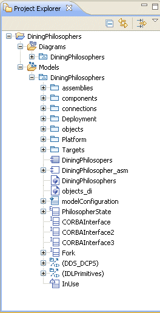
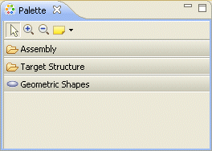
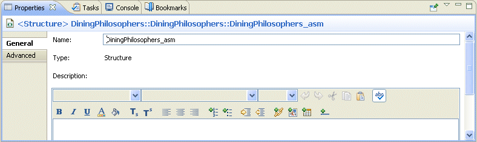

CBDDS is built on the Eclipse Workbench and Rational Software Architect environments. As a result, the CX user interface simply re-uses the conventions and containers provided by Eclipse and Rational Software Architect.
For details about the user interface and how to manipulate it, please refer to the Eclipse and Rational Software Architect help topics devoted to the user interface. There are a number of tutorials that will help you become familiar with your work environment.
CX specific capabilities including windows, wizards, and pop-up menus behave the same way as the Eclipse and Rational Software Architect elements. Any CX specific user interface elements are highlighted and noted in the appropriate online help topics.
A window contains one or more perspectives. A perspective defines the initial set and layout of views in the window. Each perspective provides different functionality to accomplish a specific task with specific resources.
The CX perspective has views for modeling components and applications and generating code. The debug perspective has views of tools for target debug and the C/C++ perspective has information about building code.
The following list provides you with a quick reference overview of the UI:



When you are modeling in CX, you are working in the CBDDS Perspective. For information about perspectives and views, refer to the Eclipse and Rational Software Architect online help.
Drag-and-drop functionality varies in the Eclipse platform. When you use the Project Explorer, drag-and-drop works as you expect. However, when you use the Palette, you have to select the element (left-click), drag it to where you want it on the diagram, and then left-click again to release it.
When you hover over an element in the diagram editor, the Action toolbar appears. Action toolbars are context-sensitive toolbars that provide access to only the set of elements that are specific to the context of the current diagram. For example, when you hover over a component, the Action toolbar contains the items Add Interface Port, Add Event Port, and Add CORBA Attribute.